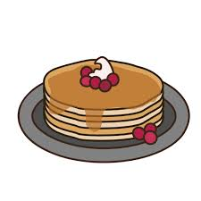

Grandmother's pancakes

Description
Learn to make pancakes the way grandma used to make them!
Everyone will love it!
Ingredients
- Milk, semi-skimmed or whole - 250ml
- 2 Eggs
- 100g all purpose flower
- Vanila sugar - 10g
- Baking powder - 5
- Baking butter
Steps
-
Split the eggs and combine them with the milk and vanilla sugar, until
you get a homogenous mixture.
-
Through a sif slowly start adding the flour while continously stirring.
- Let the mixture rise for about 10 minutes.
-
Heat up a pan on medium heat until you can observe the Leidenfrost
effect by adding a drop of water.
- Take the pan of the heat and add some butter.
- Using a ladle, use one scoop of the mixture.
- Place the pan back on the heat.
-
Flip the pancake once it comes loose on it's one while shaking the pan.
- Repeat this previous step and then the pancake is ready.
- Finish with toppings of your choice, bon appetit!
Home